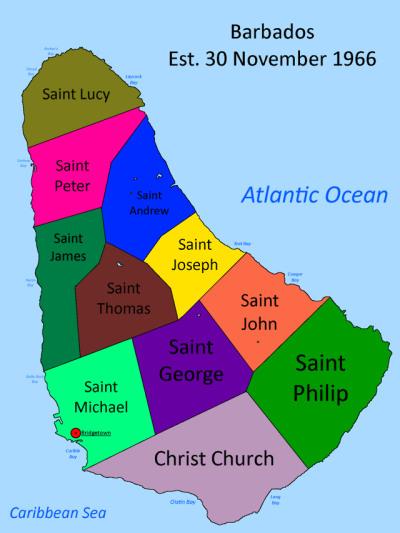
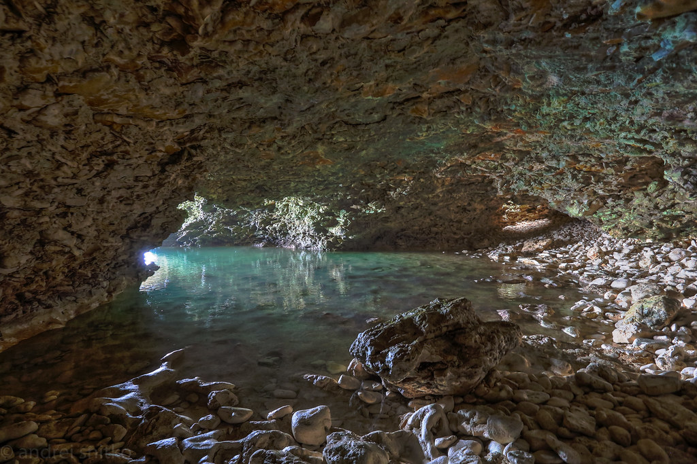
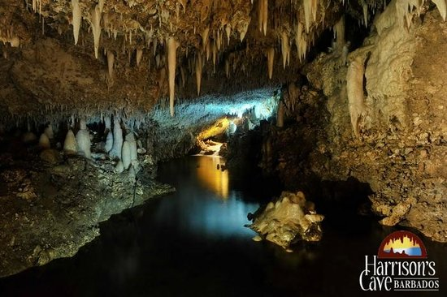
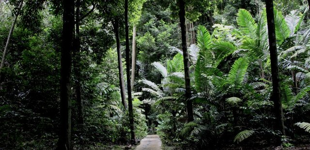
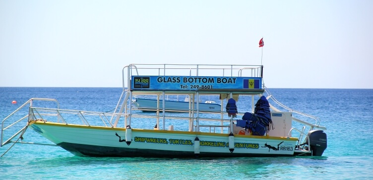

My Island Barbados
Map of Barbados

Barbados is an coral island, situated above of south America and west of the entire Caribbean island chain.
The Atlantic Ocean sits to the east of the island and the Caribbean Sea to the west. The capital is Bridgetown and is located in the parish of St Michael.
They are also many other cities like Oistins, Holetown and Speightstown.
Barbados (the one of flattest island in the Caribbean) was created by coral-reefs being pushed to the surface naturally.
Moreover, the land area measures 166.4 square miles (431 km2), with 21 miles (34 kilometers) in length and 14 miles (23 kilometers) in width.
The highest point of the island is called Mount Hillaby and is located in the parish of St. Andrew, it measures approximately 1,115 feet above sea level.
Furthermore, Barbados like the other Caribbean islands, climate is moderately tropical, with the east coast having light winds while the west have strong winds.
To learn more about Barbados click here
PLACES TO GO!!
Animal Flower Cave

The Animal Flower Cave is located at the most northerly point of Barbados in the parish of St.Lucy.
The name "Animal Flower Cave" comes from the sea anemones found in the pools of the cave. Some of these pools are deep enough for you to swim in.
There are also several openings looking out to sea, offering spectacular views!
Harrisions Cave

A unique phenomenon of nature, Harrison's Cave is an amazing gallery of stalactites hanging from the roof of the cave, and stalagmites that emerge from the ground, with streams of crystal-clear running water that drop from breathtaking waterfalls to form deep emerald pools. The stalactites and stalagmites were formed over thousands of years and in some places the stalactites have reached down to the stalagmites and a spectacular pillar has been formed.
Harrison's Cave is open every day of the week. The first tour starts at 9:00 am and the last tour is at 4:00 pm.
Most local tour companies offer tours that include a stop at Harrison's Cave, one of the most popular attractions in Barbados. Touring with a guide gives you the advantage of hotel pick-up and the abilitity to combine Harrison's Cave with other top Barbados attractions.
Welchman Hall Gully

If you like nature, hiking (at any level), plants, culture and natural history, then Welchman Hall gully must not be missed. The tranquil feel of the gully will instantly strike you. It is a place where you can experience a piece of nature and imagine what the island was like 300 years ago.
Glass Bottom Boat Adventure

See what lies beneath the waves of the Caribbean sea on a glass bottom boat tour in Barbados. The aquatic excursion is ideal for people who want to experience the underwater world, but would prefer to stay above the sea level. Enjoy views of a shipwreck along with vibrant marine life, including turtles, rays, and perhaps even an octopus. If you would like a closer look, snorkel gear is provided free of charge.